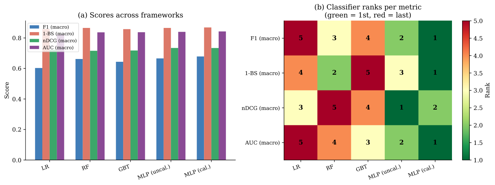
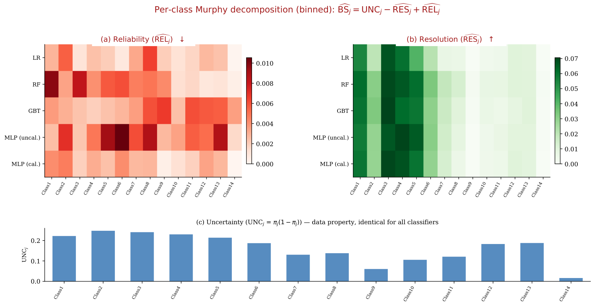

Many calibration and ranking results, including skew-invariance characterizations and Brier collapse, are machine-checked in Lean 4 against Mathlib; the proofs are in a public repository.
Abstract
Discrimination, calibration, and ranking are the three pillars of classifier evaluation, yet no single algebraic language spans all three. A recent indicator-matrix account unifies discrimination measures (precision, recall, F1, Matthews correlation) across binary, multiclass, multilabel and related settings, using Boolean cell operations on indicator label matrices, generalised to soft labels by t-norms. Calibration measures (Brier score, log-loss) and ranking measures (nDCG, AUC) fall outside it. We close the gap with two further classes of cell operators: deviation operators phi(y - yhat), which give a Calibration Framework, and rank- and slice-dependent operators (positional gains for DCG, column concordance cells for AUC), which give a Ranking Framework. Both inherit the micro/macro/exemplar aggregation architecture. For calibration, the three Brier aggregations collapse to one scalar; the Murphy decomposition holds in matrix form (unbinned, binned and isotonic); and, within the Brier-type class-indexed family, a measure is skew-invariant if and only if it depends only on the class-conditional errors alpha_j and beta_j, the calibration analogues of recall and specificity. For ranking, raw DCG collapses across aggregations while nDCG does not; per-class nDCG and per-class AUC are related by a row-column duality; micro-AUC differs from pooled ROC-AUC; raw positional scores are never strictly proper, and nDCG and AUC need not be proper. The skew-invariant per-class building blocks share one class-conditional expectation template. Experiments on two multilabel benchmarks illustrate the distinctions. Many of the results are machine-checked in Lean 4; the proofs, the experiments and the aggmetrics.scores package are public: https://github.com/rcprati/discrimination-calibration-ranking
Problem
Classifier evaluation rests on discrimination, calibration, and ranking measures. An existing indicator-matrix framework covers only discrimination measures. Calibration measures (Brier, log-loss) and ranking measures (nDCG, AUC) lack a common algebraic language with it.
Approach
The paper introduces two new classes of cell operators on label matrices. Deviation operators phi(y - yhat) yield a Calibration Framework, and rank- and slice-dependent positional operators yield a Ranking Framework. Both reuse the micro/macro/exemplar aggregation operators. Structural theorems are proved, many of them machine-checked in Lean 4 with Mathlib, and illustrated on the Emotions and Yeast multilabel benchmarks.
Results
The three Brier aggregations collapse to one scalar, and the Murphy decomposition holds in matrix form. Within the Brier-type class-indexed family, a measure is skew-invariant iff it depends only on the class-conditional errors. For ranking, raw DCG collapses across aggregations while nDCG does not; per-class nDCG and per-class AUC are related by a row-column duality; and raw positional scores are never strictly proper. Experiments show the frameworks produce different classifier orderings.

Figure 2: Experiment 1 (Emotions). (a) Scores across frameworks for five classifiers. (b) Rank heatmap (green = 1st, red = last). No two metrics produce the same classifier ordering.

Figure 6: Experiment 5 (Yeast, 14 labels, 5 classifiers). Per-class binned Murphy decomposition \widehat{\mathrm{BS}}_{j}=\mathrm{UNC}_{j}-\widehat{\mathrm{RES}}_{j}+\widehat{\mathrm{REL}}_{j} . Top row: \widehat{\mathrm{REL}}_{j} (miscalibration, Reds) and \widehat{\mathrm{RES}}_{j} (resolution, Greens) heatmaps. Bottom: \mathrm{UNC}_{j} bar chart, identical across classifiers (data property only